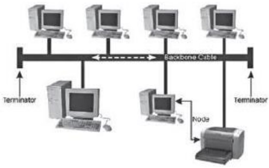
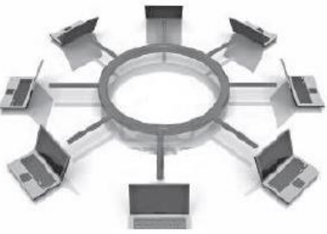
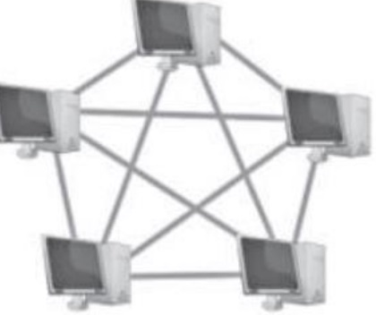

es el conjunto de instrumentos empleados para manejar informacion por medio de la computadora con el procesador de texto, la base de datos, correo electronico, hoja de calculo, buscadores, programas de diseño,presentadores, redes de telecomunicaciones, etc.
son el conjunto de recursos, herramientas, equipos, programas informaticas, aplicaciones, resdes y medios; que permite la complicacion, procesamiento, almacenamiento, tranmision de informacion como: voz, datos, texto, video e imagenes en pro de la eficacia y la agilidad
| ventajas de la tic | desventajas de las tic | |
|---|---|---|
| en la educacion |
acceso a diversas fuentes de informacion
< comunicacion en timpo real mayor interacion desarrollo de nuevas habilidades fuera del curriculo oficial aprendizaje personalizado |
riesgo de desigualdad
pueden ser una fuente de distraccion acceso a informacion de baja calidad disminuyen las habilidades manuales |
| en la sociedad |
democratizacion del acceso as la informacion
optimizacion de tramites burocraticos acceso a productos y servicos y limites geograficos accesos a nuevas tecnologias a precios accecibles |
peligro de exposicion de datos personales
acceso a informacion falsa exclusion y desigualdad |
| en las empresas |
eficciencia en la toa de decciones
nuevas modalidades de trabajo nuevas oportuniudades de creciiento |
reproduccion de puestos de trabajo
risgo de ciberataques |
| en el hogar |
facilitan la comunicacion
permiten el acceso el acceso a la educacion y el trabajo |
menos interaccon familiar
contemido inapropiado |
los beneficios de las tics en la gestion de empresas te brindarian la oportunidad de analizar datos para platificar negociosa
es el mconjunto de computadoras y sofware que estanconecados por dispositivos que reciben y envian informacion por tranmision guiada, transmision guiada inalambrica o satelites de comunicacion con el objetivo de compoartir recursos datos, programas y hardware.

| ventajas | desventajas |
|---|---|
|
compartit sofware y hardware
Compartir e intercambiar archivos entre los equipos. Centralizar programas de gestión (los usuarios pueden acceder al mismo programa para trabajar en el simultáneamente). Realizar copias de seguridad automáticamente. Organización efectiva. Mejorar la comunicación y la disponibilidad de informacion una inplementadas son economicas y ahorran tiempo comunicacion rapida y eficiente posibillidaddse manejo y control a distancia de nuestra computadora mejorar la forma de trabajo individual y el equipo |
carece de independencia
Existen muchos riesgos por lo que se deben tomar muchas medidas de seguridad. Se requiere personal capacitado para la administración y el mantenimiento de las redes. El costo para la implementación inicial es alto. Costos de operación y mantenimiento. Si se depende dela conexión a internet y falla s va a caer la red falla, se pueden ver las consecuencias en tiempo, dinro, nesfuerzo. |
Cada computadora conectada a una red se denomina host o terminal.
Los servidores son computadoras que proporcionan información a los terminales de la red. Por ejemplo: servidores de correo electrónico, servidores web o servidores de archivos
Los clientes son computadoras que envían solicitudes a los servidores para recuperar información, como una página web desde un servidor web o un correo electrónico desde un servidor de correo electrónico
La infraestructura de red son todos los recursos que hacen posible la conectividad, la gestión, las operaciones comerciales y la comunicación de la red o Internet... La infraestructura de red comprende hardware y software, sistemas y dispositivos, y permite la informática y la comunicación entre usuarios, servicios, aplicaciones y procesos.


los datos se originan con un dispositivo final, fluyen por la red y llegan a un dispositivo final
| medio | ventanjas | desventajas | cable coaxial |
Permite la transmisión de voz, datos y video de manera Simultánea.
Tiene un bajo costo y su instalación es sencilla y rápida. Cuenta con una banda ancha con capacidad de 10 Mb/segundo |
no hay modelacion de frecuencias
hace uso de conceptos especiales para la conexion fisica ofrece poca inmunidad frente a los ruidos, aunque puede mejorarse con filtros |
|---|---|---|
| cable de par trenzado (UTP, STP, FTP) |
dan muy buenas prestaciones parea redes de area local
facilidad de utilizacion e instalacion e instalacion bajo costo de fabricacion y adquisicion gran capacidad de transmision de datos de redes de area rapida conectividad y actualizable |
no son inmunes al ruidos
ancho de banda limitada distancia limitada y necesidad de repetidores tasas de error a considerar en altas velocidaees |
| fibra optica |
ocupa poco espacio
facil instalacion es liviana presenta una gran resistencia es mas ecologica inmune a interferencias electromagneticas veliz, eficaz y segura |
mas costo que los medios de cobre para la misma distancia
son fragiles requiere de conversores envejece ante la presencia de agua |
| inalambrico |
ccesibilidad
facil instalacion mayor covertura fexibilidad movil y portatil escalabilidad eficiencia |
seguridad
ancho de banda limitada velociada son prospensas a las interferencias alcance |

| red | definicion | alcance |
|---|---|---|
| red de area local (lan). | es una red que se limita a un area relativamente pequeña tal como un cuarto, un solo edificio | 200 m a 1km |
| red de area amplia (WAN). | son redes informaticas que se extiendes sobre una area geografica muy extensa, pais o continentes, utilizado medios como: satelite, cable interoceonanico y fibra optica. | miles de kilometros. |
| red de area personal (pan). | es una red de ordenadores usada para la comunicaciones. | 10 metros. |
| red de area metropolitana (man). | es una red de alta velicidad (banda ancha) quer da cobertura en una area gfeografica mas extensa, por ejemplo, una red de interconecte los edificios publicos de un municipio dentro de la localidad de fibra optica. | hasta 50 km>. |
| red de area global (gan). | utiliza la infraestructura de fibra de vidrio de las redes de area amplia (wide area nrwton) y las agrupan mrdiantes cables submarinos internacionales o transmision por satelite. | miles de km. |
| red de area de campus (can). | es una red inalambrica paraq comunicar varios edificios que se encuentran a mas de 1km en el misamop campus o empresas. | 1 a 3 km. |
| red der area de almacenamiento (san). | es una red. | limitado. |
Todos los nodos de la red se conectan a un solo cable principal, que sirve a todos los dispositivos. Este es uno de los tipos de redes más fáciles de configurara, pero al agregar demasiados dispositivos puede afectar la velocidad de la red a medida que la red troncal se congestiona. Este tipo de red también es increíblemente frágil, ya que una falla en cualquier punto de la red desconectara toda la red.
Son rede a punto a punto en las que cada nudo esta contactado a su vecino inmediato en ambos lados, son datos que viajan alrededor del anillo en una dirección hasta que alcanza en modo correcto. La falla de un solo nodo provocará una interrupción en toda la red. Esta forma de red no requiere un servidor para administrarla.
Todos los nodos se conectan na un solo punto central. Como un enrutador. El nodo central actual como un único punto de falla y un posible cuello de botella tráfico, pero también es uno de los diseños más frágiles de diseñar y expandir.

las tipologías de árbol son una evolución del modelo de estrellas e evolución múltiple redes estelares unidas por un bus central. Las redes de árbol generalmente se considera como la topología mas estable, ya que es fácil expandir mediante la adición de redes de estrellas adicionales.

Es cuando hay más de una conexión entre nodos. Esta puede ser una topología de "malla completa", , en la quecada nodo está vinculado a cada otro nodo, o una malla parcial, en la que solo algunos nodos utilizan conexiones múltiples. Esta forma de red es compleja de configurar y administrar, pero incluye un alto nivel de redundanciacontra fallas de red.
Es un conjunto de descentralización de redes de comunicaciones interconectadas, que utilizan la fama de protocolos TCO/IP, lo cual garantiza que las redes físicas heterogéneas que la componen constituyen una red lógica única de alcance mundial.
Una página web, página electrónica o página digital es un documento digital de carácter multimediático (capaz de incluir audio, video, texto y sus combinaciones), adaptado a los estándares de la World Wide Web (WWW) y a la que se puede acceder a través de un navegador Web y una conexión activa a internet.Las páginas Web se encuentran almacenadas en servidores a los que es posible acceder velozmente gracias a un sistema de protocolos de comunicación (HTTO).Las páginas Web se encuentran programadas en un formato HTML o XHTML, y se caracterizan por su relación entre unas y otras través de hipervínculos.Las páginas Web cumplen con la tarea de brindar información de cualquier índole y en cualquier estilo o grado de formalidad. Algunos permiten distintos grados de interacción entre usuarios o con alguna institución, como son las páginas de foros, servicios de citas o redes sociales, las páginas de compra y venta de bienes, las páginas de consulta o de contacto con empresas, instituciones gubernamentales o con ONG, e incluso de páginas de soporte técnico especializado.
| tipo de pagina. | estatica. | dinamica. |
|---|---|---|
| caracteristicas. |
se programa en el lengiaje HTD.
no permite la interacion con el usuario. son informativas, documentales y no interactivas. |
se programan de lenjuague PHP.
permite la interacion con el usuario. ofrecce una respuesta a los reqerimientos del usuario. |
El comercio electronico o ecomerce es el comercio de bienes y servicios en internet. Internet prmite a individuos y empresas comprar y vender una camtidad cada vez mayor de bienes fisicos, bienes digitales y servicios de forma eletronoca. El comercio electronico conecta vendedores con clientes y permite intercambios atraves de internet. Puede funcionar de muchas maneras y adoptar varias formas.
el comercio aparece desde que comienzan las relaciones humanas.